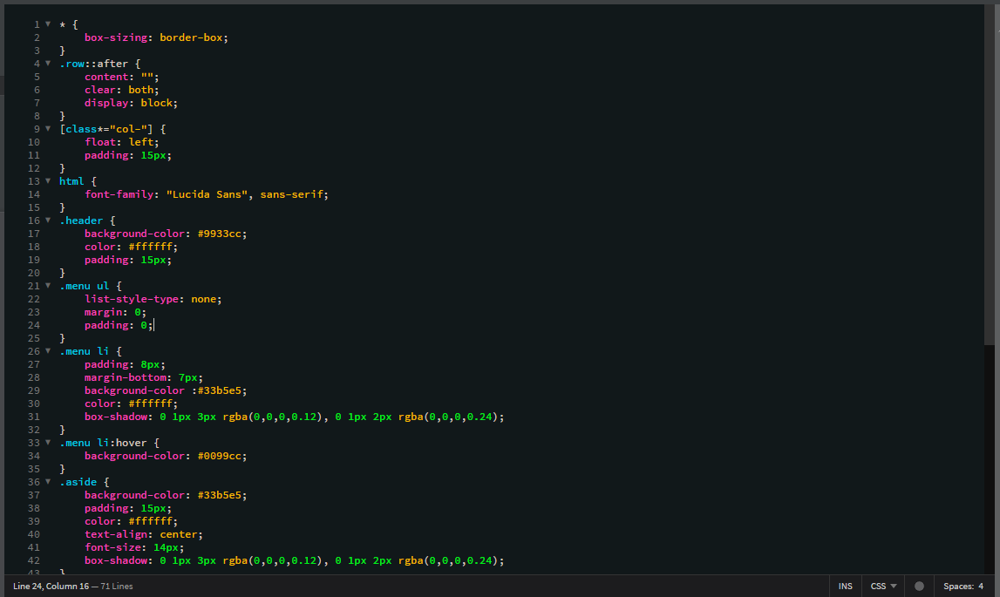
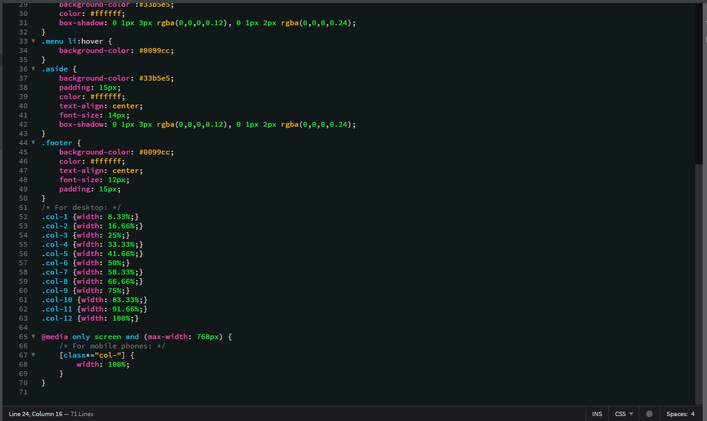

What are breakpoints?
Breakpoints are the point at which your sites content will respond to provide the user with the best possible layout to consume the information in different devices.
How is a breakpoint applied?
A media query is required to have a breakpoint. A media query is the key ingredient that, in it's simplest form, allows specified CSS to be applied depending on the device and whether it matches the media query criteria. This is how a media query looks like:
@media only screen and (min-width: 480px){}
A media query should be written at the bottom of the main CSS styling code. When a brekpoint takes action it overruns any code that was elected to be altered.

